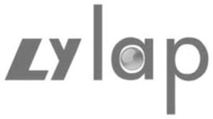

Trade Mark Journal No.2025/046 14 November 2025
WO0000001867605 (7,9,10,40)
Office of origin: China
Date of International Registration:11 March 2025
Date of designation in the UK:
11 March 2025

- Class 7
- Metalworking machines; presses [machines for industrial purposes]; foundry machines; moulding machines; trueing machines; machines and apparatus for polishing [electric]; grinding machines; stuffing boxes [parts of machines]; stamping machines; molds being parts of machines for processing plastics; glass polishing machines; tools [parts of machines]; eyeglass processing equipment; optical cold processing equipment.
- Class 9
- Thread counters; laboratory trays; test tubes; stills for laboratory experiments; incubators for bacteria culture; petri dishes; optical lamps; optical lenses; mirrors [optics]; stereoscopes; signal lanterns; cinematographic cameras; fire extinguishers; protection devices for personal use against accidents; divers' masks; goggles for sports; protective helmets for sports; headgear being protective helmets; eyeglasses; eyeglass lenses; nose clips for divers and swimmers; goggles.
- Class 10
- Respiratory masks for artificial respiration; therapeutic facial masks; mirrors for dentists; ultraviolet ray lamps for medical purposes; LED masks for therapeutic purposes; protection devices against X-rays, for medical purposes; masks for use by medical personnel; babies' bottles; sex toys; medical hygiene mask.
- Class 40
- Grinding; burnishing by abrasion; custom assembling of materials for others; vulcanization [material treatment]; soldering; metal plating; blacksmithing; metal treating; metal casting; electroplating.
Suzhou Liangyu Enterprise Management Co., Ltd.
Representative: Suzhou Shunjie Intellectual Property Agent Co.,LTD., Room.3225, Building B Citylife Plaza,, No.251 Pinglong Road, Gusu District,, Suzhou City, Jiangsu Province, CHINA